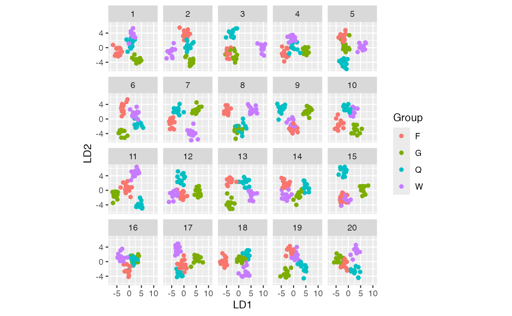

An introduction to the nullabor package
The nullabor package provides functions to support quantifying the significance of structure seen in plots of data.
The functions provide methods for two protocols: lineup and rorschach. The lineup protocol places the plot of the actual data among a field of plots of null data, and in the Rorschach, all plots are of null data. The encrypt function enables the location of the actual data plot to be a secret, that needs decrypt to reveal. There are several different functions for generating null data sets: null_permute, null_lm and null_dist.
The lineup protocol
In this protocol, the plot of the real data is randomly embedded amongst a set of null plots. The matrix of plots is known as a lineup. The null plots are generated by a method consistent with the null hypothesis. The lineup is shown to an observer. If the observer can pick the real data as different from the others, this puts weight on the statistical significance of the structure in the plot. The "lineup" function returns a set of generated null datasets and the real data embedded randomly among these null datasets. The method of null generation should be provided in the lineup function for the null datasets to be generated automatically along with the real dataset. The users also have the option of generating the null datasets themselves and providing them in the "lineup" function. The position of the real dataset can be left missing and the function picks the position at random. The function then returns the position as an encrypted code. The encrypted code is copied and pasted on the console to obtain the true position of the plot.
## decrypt("7OPa 86t6 XR fJ3XtXJR Gj")## mpg cyl disp hp drat wt qsec vs am gear carb .sample
## 1 18.1 6 160 110 3.90 2.620 16.46 0 1 4 4 1
## 2 33.9 6 160 110 3.90 2.875 17.02 0 1 4 4 1
## 3 15.2 4 108 93 3.85 2.320 18.61 1 1 4 1 1
## 4 21.0 6 258 110 3.08 3.215 19.44 1 0 3 1 1
## 5 16.4 8 360 175 3.15 3.440 17.02 0 0 3 2 1
## 6 24.4 6 225 105 2.76 3.460 20.22 1 0 3 1 1## [1] 16The lineup data can be then used to generate the lineup using ggplot2. The lineup is shown to one or more observers who are asked to identify the plot which is different. If the observer can identify the plot of the real data correctly, we reject the null hypothesis and conclude that the plot of the real data has stronger structure than the null plots.

The Rorschach protocol
The Rorschach protocol is used to calibrate the eyes for variation due to sampling. The plots generated corresponds to the null datasets, data that is consistent with a null hypothesis. The "rorschach" function returns a set of null plots which are shown to observers to calibrate their eyes with variation. Like the "lineup" function, the null generating mechanism should be provided as an input along with a real dataset. A probability can also be given as input which dictates the chance of including the true data with null data.
d <- rorschach(null_permute("mpg"), mtcars, n = 20, p = 0)
ggplot(data=d, aes(x=mpg, y=wt)) + geom_point() + facet_wrap(~ .sample)
Generate null data with a specific distribution
The "null_dist" function takes as input a variable name of the data and a particular distribution. This variable in the data is substituted by random generations of the particular distribution. The different distributions include beta, cauchy, chi-squared, exponential, f, gamma, geometric, log-normal, lognormal, logistic, negative binomial, normal, poisson, t and weibull. A list of parameters of distribution can also be provided as input. In case it is not provided, "fitdistr" is used to estimate the parameters from the given data. The function "null_dist" returns a function that given the data generates a null data set.
## mpg cyl disp hp drat wt qsec vs am gear carb
## Mazda RX4 16.43692 6 160 110 3.90 2.620 16.46 0 1 4 4
## Mazda RX4 Wag 13.25943 6 160 110 3.90 2.875 17.02 0 1 4 4
## Datsun 710 15.98654 4 108 93 3.85 2.320 18.61 1 1 4 1
## Hornet 4 Drive 25.24992 6 258 110 3.08 3.215 19.44 1 0 3 1
## Hornet Sportabout 21.06052 8 360 175 3.15 3.440 17.02 0 0 3 2
## Valiant 19.04074 6 225 105 2.76 3.460 20.22 1 0 3 1Generate null data by permuting a variable
The "null_permute" function takes as input a variable name of the data. This variable is permuted to obtain the null dataset. The function "null_dist" returns a function that given the data generates a null data set.
## mpg cyl disp hp drat wt qsec vs am gear carb
## Mazda RX4 15.2 6 160 110 3.90 2.620 16.46 0 1 4 4
## Mazda RX4 Wag 30.4 6 160 110 3.90 2.875 17.02 0 1 4 4
## Datsun 710 18.7 4 108 93 3.85 2.320 18.61 1 1 4 1
## Hornet 4 Drive 17.3 6 258 110 3.08 3.215 19.44 1 0 3 1
## Hornet Sportabout 22.8 8 360 175 3.15 3.440 17.02 0 0 3 2
## Valiant 17.8 6 225 105 2.76 3.460 20.22 1 0 3 1Generate null data with null residuals from a model
The function "null_lm" takes as input a model specification formula as defined by "lm" and method for generating null residuals from the model. The three built in methods are ‘rotate’, ‘pboot’ and ‘boot’ defined by "resid_rotate", "resid_pboot" and "resid_boot" respectively. The function returns a function which given the data generates a null dataset.
## mpg cyl disp hp drat wt qsec vs am gear carb
## Mazda RX4 21.0 6 160 110 3.90 3.123887 16.46 0 1 4 4
## Mazda RX4 Wag 21.0 6 160 110 3.90 3.056918 17.02 0 1 4 4
## Datsun 710 22.8 4 108 93 3.85 2.933520 18.61 1 1 4 1
## Hornet 4 Drive 21.4 6 258 110 3.08 2.806303 19.44 1 0 3 1
## Hornet Sportabout 18.7 8 360 175 3.15 3.866555 17.02 0 0 3 2
## Valiant 18.1 6 225 105 2.76 2.546959 20.22 1 0 3 1
## .resid .fitted
## Mazda RX4 0.03473384 3.089154
## Mazda RX4 Wag -0.03223526 3.089154
## Datsun 710 0.09791756 2.835602
## Hornet 4 Drive -0.22650539 3.032809
## Hornet Sportabout 0.45341835 3.413136
## Valiant -0.95069392 3.497653Generate null data outside of nullabor
If the null generating mechanism is specialised it is worth creating the process outside of the nullabor package. The lineup function can be simply used to randomize the position of the data plot to produce a lineup, encrypting the position. An example of this is in Roy Chowdhury, N. et al (2015), where the data is high-dimensional, and the response variable is categorical. We would use a dimension reduction method like linear discrimants to find a low-dimensional projection that separates the groups. To generate null data, the group labels are permuted and the dimension reduction is performed again.
##
## Attaching package: 'MASS'## The following object is masked from 'package:dplyr':
##
## selectdata(wasps)
wasp.lda <- lda(Group~., data=wasps[,-1])
wasp.ld <- predict(wasp.lda, dimen=2)$x
true <- data.frame(wasp.ld, Group=wasps$Group)
wasp.sim <- data.frame(LD1=NULL, LD2=NULL, Group=NULL, .n=NULL)
for (i in 1:19) {
x <- wasps
x$Group <- sample(x$Group)
x.lda <- lda(Group~., data=x[,-1])
x.ld <- predict(x.lda, dimen=2)$x
sim <- data.frame(x.ld, Group=x$Group, .n=i)
wasp.sim <- rbind(wasp.sim, sim)
}
pos <- sample(1:20, 1)
d <- lineup(true=true, samples=wasp.sim, pos=pos)
ggplot(d, aes(x=LD1, y=LD2, colour=Group)) +
facet_wrap(~.sample, ncol=5) +
geom_point() + theme(aspect.ratio=1)
## [1] 1Computing p-values
The function pvisual can be used to compute a visual p-value after the lineup has been shown to a group of independent observers. You need to provide (1) number of plots in the lineup, m (default=20), (2) number of observers who read the plot, K, and (3) the number of observers who picked the data plot. For the above example, suppose that 10 observers evaluated the lineup, and of these 4 selected the data plot, then the visual p-value, calculated using the binomial, and via simulation to account for dependencies is:
## x simulated binom
## [1,] 4 0.0024 0.001028498Computing power
The function visual_power can be used to compute the power of each lineup. This is an example using the sample turk results provided.
## # A tibble: 6 x 3
## pic_id power n
## <int> <dbl> <int>
## 1 36 0 18
## 2 105 0.746 17
## 3 116 0.125 16
## 4 131 0.842 14
## 5 159 0.656 15
## 6 225 0.130 15References
Buja, A., Cook, D., Hofmann, H., Lawrence, M., Lee, E.-K., Swayne, D. F, Wickham, H. (2009) Statistical Inference for Exploratory Data Analysis and Model Diagnostics, Royal Society Philosophical Transactions A, 367:4361–4383.
Wickham, H., Cook, D., Hofmann, H. and Buja, A. (2010) Graphical Inference for Infovis, IEEE Transactions on Visualization and Computer Graphics, 16(6):973–979, http://doi.ieeecomputersociety.org/10.1109/TVCG.2010.161. Best paper award.
Hofmann, H., Follett, L., Majumder, M. and Cook, D. (2012) Graphical Tests for Power Comparison of Competing Designs, IEEE Transactions on Visualization and Computer Graphics, 18(12):2441–2448, http://doi.ieeecomputersociety.org/10.1109/TVCG.2012.230.
Majumder, M., Hofmann, H. and Cook, D. (2013) Validation of Visual Statistical Inference, Applied to Linear Models, Journal of the American Statistical Association, 108(503):942–956. Featured Article http://amstat.tandfonline.com/doi/pdf/10.1080/01621459.2013.808157.
Roy Chowdhury, N., Cook, D., Hofmann, H., Majumder, M., Lee, E. K., & Toth, A. L. (2014). Using visual statistical inference to better understand random class separations in high dimension, low sample size data. Computational Statistics, 30(2), 293-316. 10.1007/s00180-014-0534-x
Majumder, M. and Hofmann, H. and Cook, D. (2014) Human Factors Influencing Visual Statistical Inference, http://arxiv.org/abs/1408.1974.